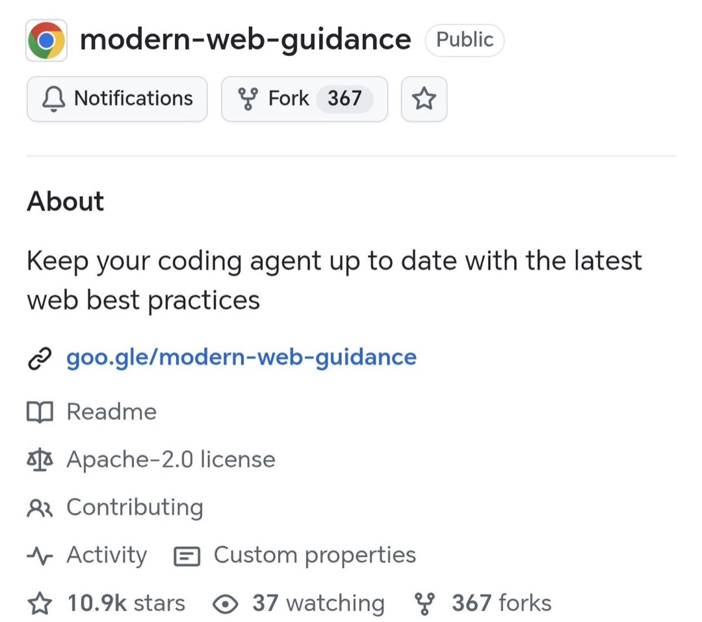
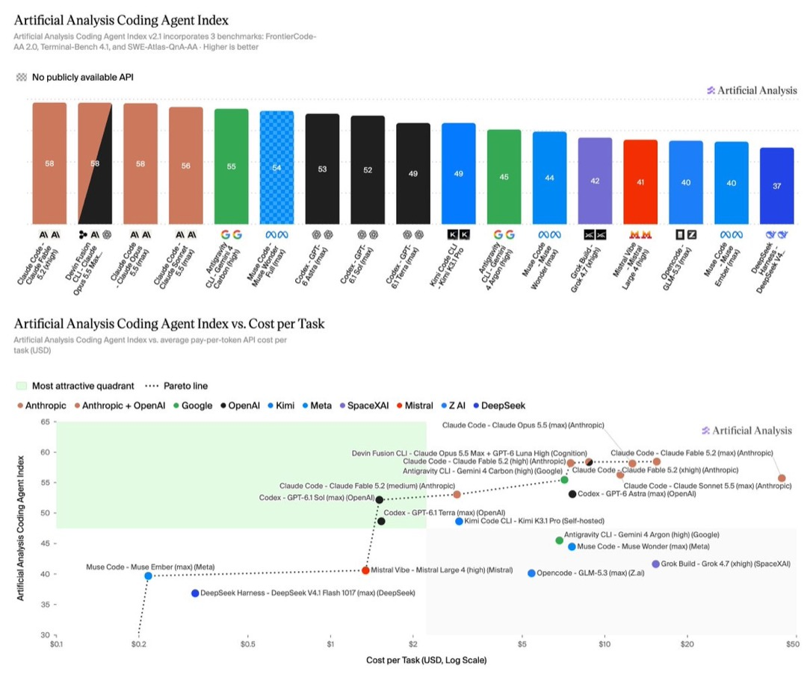

本期速览
01 DeepSeek超高速推理引擎开源
03 Chrome开源现代Web编码规范
04 Agent指数v2.1 Fable居首
06 AgentPilot用策略模型优化试错
08 Agent错误转化为lint规则门禁
01｜DeepSeek超高速推理引擎开源
来源（X） · @alacheng · 2026-11-15 18:41
在4 x GB300 (TP4) 下 解码速度 1,740 tokens/s
在 8 x B300 (TP8) 下 解码速度 2,060 tokens/s
https://github.com/basetenlabs/deepseek-ultrafast
02｜Agent快速修复会扩散坏代码
来源（X） · @poteto · 2026-11-15 00:49
中文译文
急修的方案被认为是害处重重的：当你要求最小或最快的改动时，你可能会让你的代理写出更差的代码
看起来像是无害的创可贴，可能会导致下一个代理复制那种模式。不知不觉间，那种模式已经到处蔓延
我们以前手工编写创可贴式的修复，因为我们很少有时间做正确的事情。代理改变了这个算盘。有时你希望它修复根本原因，即使那更具侵入性
原文
quick fixes considered harmful: you might be making your agents write worse code when you ask for the smallest or quickest possible change
what seems like a harmless bandaid may lead to that pattern being copied by the next agent. before you know it that pattern has spread everywhere
we used to write bandaid fixes by hand because we rarely had the time to do the right thing. agents change this calculus. sometimes you want it to fix the root cause instead even if it’s more invasive
03｜Chrome开源现代Web编码规范
来源（X） · @LiumangtuCrypto · 2026-11-15 14:53
AI 写前端代码有个老毛病：总停留在 2019 年。训练数据里堆了太多早被弃用的旧写法，模型再强也写不出当下的东西。
Google Chrome 团队这次直接开源了 modern-web-guidance，专治这个问题。
1. 准确率从 56% 提到 88%，生成代码的质量和成功率立刻上一个台阶
2. 覆盖 212 项现代 Web 特性，直接喂给 Claude、Codex、GitHub Copilot 这类编程代理
3. 一行命令安装：
npx modern-web-guidance@latest install
光有好模型不够，喂进去的数据旧了，输出就旧。上下文和技能工程，才决定你的编程代理是停在过去，还是写出符合现代标准的代码。
仓库地址：https://github.com/GoogleChrome/modern-web-guidance

04｜Agent指数v2.1 Fable居首
来源（X） · @YajunZhu36691 · 2026-11-15 09:29
Fable 5.2（high/xhigh）与 Opus 5.5 max 并列第一（58 分），Sonnet 5.5 max 56 分，Gemini 4 Carbon high 55 分
有两个特别的点：
Fable 5.2 开到 max 反掉到 56 分——多轮尝试撞了任务时限
48 分以上配置单任务差价近 30 倍：Codex + GPT-6.1 Sol (max) 52 分只花 $1.51，Fable 5.2 (max) 56 分要烧 $44.22。
大家可以按自己的实际情况和需求选择合适的组合
https://x.com/ArtificialAnlys/status/2121393821955334328

引用内容
Artificial Analysis @ArtificialAnlys
中文译文
宣布 Artificial Analysis 编码代理指数 v2.1，升级了 FrontierCode 和 Terminal-Bench。Claude Fable 5.2 和 Claude Opus 5.5 以 58 分并列领先
编码代理指数在代理框架中衡量模型；指数的 v2.1 将 FrontierCode 从 1.1 升级到 2.0，将 Terminal-Bench 从 4.0 升级到 4.1。
升级内容：
➤ FrontierCode-AA 2.0（取代 FrontierCode v1.1）：我们对 Cognition 的 FrontierCode 2.0 的实现，包含 132 个真实世界编码任务，评判标准是仓库维护者是否会合并代理的更改
➤ Terminal-Bench 4.1（取代 Terminal-Bench 4.0）：相同的 66 个任务，使用更新的验证器评分，提升了可靠性和对奖励操纵的抵抗能力
继续留在指数中：SWE-Atlas-QnA-AA
关键结果：
➤ Claude Fable 5.2 和 Claude Opus 5.5 以 58 分并列领先：Claude Fable 5.2 在 Claude Code 中的 xhigh 和 high 模式下均得 58 分。Claude Opus 5.5（max）在 Claude Code 中得 58 分，并与 GPT-6 Luna High 搭配，在 Cognition 的多模型框架 Devin Fusion CLI 中也得 58 分。Claude Fable 5.2（max）得 56 分，因为其更多尝试超过了任务时间限制。Claude Sonnet 5.5（max，56 分）在 Claude Code 中和 Gemini 4 Carbon（high，55 分）在 Antigravity CLI 中紧随其后
➤ v2.1 中指数分数较低，主要由升级到 FrontierCode-AA 2.0 所驱动：模型平均下降 5 分。Codex 搭配 GPT-6.1 Terra（max）是唯一在版本之间没有下降的配置，与其之前的分数相差不到 1 分
➤ 在得分 48 以上的配置中，每个任务的成本差异约 30 倍：从 Codex 搭配 GPT-6.1 Sol（max，52 分）的 $1.51 到 Claude Code 搭配 Claude Fable 5.2（max，56 分）的 $44.22
原文
Announcing Artificial Analysis Coding Agent Index v2.1, upgrading FrontierCode and Terminal-Bench. Claude Fable 5.2 and Claude Opus 5.5 share the lead at 58
The Coding Agent Index measures models in agent harnesses; v2.1 of the Index upgrades FrontierCode from 1.1 to 2.0 and Terminal-Bench from 4.0 to 4.1.
Upgraded:
➤ FrontierCode-AA 2.0 (replacing FrontierCode v1.1): our implementation of Cognition's FrontierCode 2.0, comprising 132 real-world coding tasks graded on whether a repository maintainer would merge the agent's change
➤ Terminal-Bench 4.1 (replacing Terminal-Bench 4.0): the same 66 tasks, scored with updated verifiers that improve reliability and resistance to reward hacking
Staying in the Index: SWE-Atlas-QnA-AA
Key results:
➤ Claude Fable 5.2 and Claude Opus 5.5 share the lead at 58: Claude Fable 5.2 scores 58 at both xhigh and high in Claude Code. Claude Opus 5.5 (max) scores 58 in Claude Code and, paired with GPT-6 Luna High, in Cognition's multi-model harness Devin Fusion CLI. Claude Fable 5.2 (max) scores 56 as more of its attempts hit task time limits. Claude Sonnet 5.5 (max, 56) in Claude Code and Gemini 4 Carbon (high, 55) in Antigravity CLI follow
➤ Index scores are lower in v2.1, driven by the upgrade to FrontierCode-AA 2.0: models score lower by 5 points on average. Codex with GPT-6.1 Terra (max) is the only configuration which didn’t fall between versions, sitting within 1 point of its prior score
➤ Cost per task varies ~30x among configurations scoring 48+: from $1.51 for Codex with GPT-6.1 Sol (max, 52) to $44.22 for Claude Code with Claude Fable 5.2 (max, 56)
05｜DeepSeek开源chat-demo
来源（X） · @huangyun_122 · 2026-11-15 17:15
就在刚刚，DeepSeek 放出一个开源库，deepseek-ai/chat-demo 它可不是个套壳：
1/ 不需要写一行代码；不要买任何服务器；更不需要平凑第三方插件
2/ 原生边想边搜，直接调用官方内置 deepseek_web_search, 深度思考模式下，多步推理+全网检索+信源引用
3/ 全能文档/网页绞肉机：PDF,Word,PPT,图片拖进去秒解析，URL 自动抓文
4/ 原生语言交互：自带移动端实时音频输入 + 回答朗读
5/ 极致隐私保护和数据自由：所有数据存档本地 IndexedDB
什么是开源精神：最强模型权重 + 官方满配武器库，全部交到你手里，充分相信使用者对社区，对人类的贡献
爱折腾的人类，立即马上 Fork, 世界有你而精彩:
https://github.com/deepseek-ai/chat-demo
06｜AgentPilot用策略模型优化试错
来源（X） · @Xudong07452910 · 2026-11-15 18:34
它用一个 9B 策略模型指导 Codex、Claude Code、DeepSeek Harness 等 Agent，决定从哪个版本继续改进、探索什么方向，以及如何分配试错预算。
具体来说，AgentPilot 会记录每次尝试的结果、版本关系和剩余预算，通过 KL-UCB 或 Policy Memory 利用历史反馈，持续调整后续的探索策略。
项目还提供 RSI Arena，用来评估 Agent 在多轮尝试中的改进效果，以及这些改进能否泛化到未见任务。
作者也报告，在 Terminal-Bench 2.1 实验中，经过 10 轮改进，未见任务上的成绩从 44.9% 提升至 69.4%，提高了 24.5 个百分点。
我比较关注它对 Agent 自我改进的一个具体切入点：把试错过程中的策略选择单独拿出来优化，让 Agent 能够根据真实反馈，逐渐学会如何更有效地探索。
对于长时间运行的 Agent，如何利用有限的试错预算，可能会直接影响系统最终能改进到什么程度。
💻 GitHub: https://github.com/HKUDS/AgentPilot
07｜Agentes将Agent纳入团队频道
来源（X） · @GitHub_Daily · 2026-11-15 15:30
http://agentes.chat 是一个开源、可以自己部署的团队聊天工具，定位是 Slack 的替代品，特别的地方是 Agent 和人待在同一个频道里。
每个 Agent 有自己的角色、负责人和每月预算，在频道里看得到对话，轮到它时才接话，干活过程所有人都能看见。
GitHub：https://github.com/agentes-chat/agentes-chat
合并代码、上线部署这类敏感操作，会在聊天里弹出一张卡片，等负责人点了批准才执行。每次调用模型的花费也都记在对应 Agent 名下。
让 Agent 动手前先问一句，这个设计我觉得挺实在。
Agent 还有自己的电脑和浏览器。浏览器功能还在测试，操作时能在聊天里实时看着，碰到登录或验证码可以接手，弄完再交还。
模型可以接 Claude、OpenAI、Gemini、DeepSeek、Kimi 等，一条命令装到 Linux 服务器上，官方说大约 10 分钟就能跑起来。
08｜Agent错误转化为lint规则门禁
来源（X） · @Fred834567 · 2026-11-15 17:25
我周末去他公司，点开他们业务仓库一看，差点没背过气去。
功能确实都跑通了，但变量名拼音混着英文，各种异常处理全用try-catch强行吞掉，连个日志都不打，整个就是一坨包装精美的屎山。
我问他怎么不做代码审查？他叹了口气说：“写了啊，我们在系统提示词里明确告诉AI，‘请务必写出符合规范、优雅健壮的代码’。结果它每次都答应得好好的，一写就乱来。”
有个卵用。
AI本质上是概率模型，它只负责“让代码跑通”或者“讨好你”，它根本不在乎你的项目长期怎么维护。你跟它讲道理，它只会用最完美的格式糊弄你。
Lauren Tan这招绝就绝在，她放弃了用魔法打败魔法。她把Agent犯过的每一个错，全都变成了死死的 lint 规则和CI拦截门禁。
Agent写错一次，直接加一条语法检查规则；漏了状态处理，直接写个单测卡死
引用内容
Yarchi @undefinedKi
中文译文
"所有代码都是垃圾，除了我的" —— Lauren Tan，SpaceXSI 上 GrokBot 的工程师
在 AI Engineer Code Summit 上，她刚刚展示了她完整的编码设置。
每个代理的错误都变成一条 lint 规则，而不是提示词。代理用视频、截图和测试来验证自己的工作。结果：一个月内 3000 个 PR 进入生产环境。
她的代码库现在干净到代理可以合并自己的大部分 PR。在你自动化任何东西之前，先看看这个。
原文
"All code is slop, except mine" - Lauren Tan, engineer on GrokBot at SpaceXSI
At AI Engineer Code Summit she just showed her entire coding setup.
Every agent mistake becomes a lint rule, not a prompt. Agents verify their own work with videos, screenshots and tests. Result: 3,000 PRs to production in a month.
Her codebase is now clean enough that agents merge most of their own PRs. Watch this before you automate anything.

09｜斯坦福Agent工程课更新至第6讲
来源（X） · @Tao100086 · 2026-11-15 14:05
youtube地址：https://youtube.com/watch?v=DGI4vucR71w
我翻译烧录了中英文双语字幕，B站合集：
https://space.bilibili.com/433626734/lists/9578385?type=season
这是一门全新的斯坦福研究生课程，由 Diyi Yang、Michael Ryan（DSPy 核心贡献者）和 John Yang（SWE-bench 共同创建者）共同授课。
核心定位是：从单一大模型转向复合 AI 系统（Compound AI Systems） 的工程实践。也就是把 LLM、检索器、工具、优化器、记忆等组件组合起来，构建从简单流水线到自主 Agent 的完整系统。
对搭建Agent系统感兴趣的朋友可以收录一下。
引用内容
Tao Wang @Tao100086
分 6 个阶段，大约一年：
① 数学和 Python 基础
② 机器学习：CS229
③ 深度学习与视觉：Karpathy Zero to Hero → CS231n
④ NLP 与 Transformer：CS224N → CS336（从零训练一个语言模型）
⑤ 强化学习：CS234 + 伯克利 CS285
⑥ Agent：斯坦福今年秋天新开的 CS329Z + 伯克利 Agent 系列公开课
最重要的建议：一定要做作业，光看视频等于没学。
阶段 0：编程与数学基础
Python
- [ ] ⭐ Stanford Code in Place（CS106A 的免费线上版）— 官网 (https://codeinplace.stanford.edu/)
- [ ] ○ Harvard CS50P：讲得非常好的 Python 入门 YouTube (https://www.youtube.com/playlist?list=PLhQjrBD2T3817j24-GogXmWqO5Q5vYy0V)
线性代数
- [ ] ⭐ 3Blue1Brown《线性代数的本质》：先建立直觉 — YouTube (https://www.youtube.com/playlist?list=PLZHQObOWTQDPD3MizzM2xVFitgF8hE_ab)
- [ ] ⭐ MIT 18.06（Gilbert Strang）：经典中的经典 — · YouTube (https://www.youtube.com/playlist?list=PLE7DDD91010BC51F8)
- [ ] ○ Stanford ENGR108（Boyd，就是上一版提到的 EE103，现在改了编号），更偏应用 — · YouTube (https://www.youtube.com/playlist?list=PLoROMvodv4rMz-WbFQtNUsUElIh2cPmN9)
概率与微积分
- [ ] ⭐ Stanford CS109 — · YouTube 2022 (https://www.youtube.com/playlist?list=PLoROMvodv4rOpr_A7B9SriE_iZmkanvUg)
- [ ] ○ Harvard Stat 110（Joe Blitzstein）：公认最好的概率课之一 — · YouTube (https://www.youtube.com/playlist?list=PL2SOU6wwxB0uwwH80KTQ6ht66KWxbzTIo)
- [ ] ○ 3Blue1Brown《微积分的本质》 — YouTube (https://www.youtube.com/playlist?list=PLZHQObOWTQDMsr9K-rj53DwVRMYO3t5Yr)
阶段 1：机器学习
- [ ] ○ Coursera Machine Learning Specialization（吴恩达）：适合零基础，先建立直觉 — 官网 (https://www.coursera.org/specializations/machine-learning-introduction)
- [ ] ⭐ Stanford CS229 — · YouTube 2018 吴恩达版 (https://www.youtube.com/playlist?list=PLoROMvodv4rMiGQp3WXShtMGgzqpfVfbU)
- [ ] ○ Cornell CS4780（Kilian Weinberger）：直觉讲得最清楚的机器学习课之一，和 CS229 互补 — · YouTube (https://www.youtube.com/playlist?list=PLl8OlHZGYOQ7bkVbuRthEsaLr7bONzbXS)
- 验收项目：用 NumPy 从零实现线性回归、逻辑回归和 k-means，再用一个 Kaggle 数据集完整走一遍流程
阶段 2：深度学习 + 计算机视觉
- [ ] ○ 3Blue1Brown 神经网络系列：用动画讲清反向传播和 Transformer — YouTube (https://www.youtube.com/playlist?list=PLZHQObOWTQDNU6R1_67000Dx_ZCJB-3pi)
- [ ] ⭐ Karpathy《Neural Networks: Zero to Hero》：从手写自动求导一路写到 GPT。这是理解深度学习最好的入门方式，后几集正好衔接阶段 3 — ·YouTube (https://www.youtube.com/playlist?list=PLAqhIrjkxbuWI23v9cThsA9GvCAUhRvKZ)
- [ ] ⭐ Stanford CS231n — · YouTube 2025 (https://www.youtube.com/playlist?list=PLoROMvodv4rOmsNzYBMe0gJY2XS8AQg16)（2026 年春季的录像只对选课学生开放）
- [ ] ○ UMich EECS 498/598（Justin Johnson）：相当于 CS231n 的加长版，作业质量很高，可以替代 CS231n — · YouTube (https://www.youtube.com/playlist?list=PL5-TkQAfAZFbzxjBHtzdVCWE0Zbhomg7r)
- [ ] ○ http://fast.ai Practical Deep Learning：先跑通，再深入原理 — · YouTube (https://www.youtube.com/playlist?list=PLfYUBJiXbdtSvpQjSnJJ_PmDQB_VyT5iU)
- [ ] ○ MIT 6.S191：轻量入门课，每年更新 — · YouTube (https://www.youtube.com/playlist?list=PLtBw6njQRU-rwp5__7C0oIVt26ZgjG9NI)
- [ ] ○ Stanford CS230 — · YouTube Autumn 2025 (https://www.youtube.com/playlist?list=PLoROMvodv4rNRRGdS0rBbXOUGA0wjdh1X)
- [ ] ○ 生成模型：Stanford CS236 — · YouTube 2023 (https://www.youtube.com/playlist?list=PLoROMvodv4rPOWA-omMM6STXaWW4FvJT8)；MIT 6.S184 讲流匹配和扩散模型 — · YouTube 2026 (https://www.youtube.com/playlist?list=PL57nT7tSGAAXwjhDYcxEycx5W7YoSrZyt)
- 验收项目：完成 CS231n（或 EECS 498）的作业，再微调一个 ViT 或检测模型
阶段 3：NLP 与 Transformer
- [ ] ⭐ Stanford CS224N — · YouTube Spring 2024 (https://www.youtube.com/playlist?list=PLoROMvodv4rOaMFbaqxPDoLWjDaRAdP9D)
- [ ] ○ Stanford CME 295：Transformer 和 LLM 概览 —· YouTube Autumn 2025 (https://www.youtube.com/playlist?list=PLoROMvodv4rOCXd21gf0CF4xr35yINeOy)
- [ ] ⭐ Stanford CS336 — · YouTube Spring 2026 (https://www.youtube.com/playlist?list=PLoROMvodv4rMqXOcazWaTUHhq-yembLCV)
- [ ] ○ Stanford CS25：用来跟进前沿 — · YouTube (https://www.youtube.com/playlist?list=PLoROMvodv4rNiJRchCzutFw5ItR_Z27CM)
- [ ] ○ CMU 11-711 Advanced NLP（Graham Neubig）：覆盖面很广，包括 RAG 和 Agent — · YouTube (https://www.youtube.com/playlist?list=PL8PYTP1V4I8D4BeyjwWczukWq9d8PNyZp)
- [ ] ○ Hugging Face LLM Course：工程实战 — 官网 (https://huggingface.co/learn/llm-course)
- 验收项目：完成 CS336 作业 1，从零写一个 BPE tokenizer 和 Transformer 语言模型，并把它训练起来
阶段 4：强化学习
- [ ] ○ Sutton & Barto《Reinforcement Learning》教材 — 免费在线版 (http://incompleteideas.net/book/the-book-2nd.html)
- [ ] ○ David Silver RL 课（UCL × DeepMind 2015）：经典的理论入门 — · YouTube (https://www.youtube.com/playlist?list=PLqYmG7hTraZDM-OYHWgPebj2MfCFzFObQ)
- [ ] ⭐ Stanford CS234：打 RL 基础 — · YouTube Spring 2024 (https://www.youtube.com/playlist?list=PLoROMvodv4rN4wG6Nk6sNpTEbuOSosZdX)
- [ ] ⭐ Berkeley CS285（Sergey Levine）：深度强化学习最权威的课 — · YouTube 2023 (https://www.youtube.com/playlist?list=PL_iWQOsE6TfVYGEGiAOMaOzzv41Jfm_Ps)
- [ ] ○ Stanford CS224R：和 CS285 内容重叠，但用 RL 训练 LLM 的部分讲得更多 — · YouTube (https://www.youtube.com/playlist?list=PLoROMvodv4rPwxE0ONYRa_itZFdaKCylL)
- [ ] ○ OpenAI Spinning Up：给算法实现配上代码 — 官网 (https://spinningup.openai.com/)
- [ ] ○ Hugging Face Deep RL Course — 官网 (https://huggingface.co/learn/deep-rl-course)
- [ ] ○ Stanford CS329H：RLHF 和偏好学习，Autumn 2026 正在开课 — 官网 (https://web.stanford.edu/class/cs329h/)
- [ ] ○ Stanford CS221：MDP 和博弈部分可以用来打基础 — · YouTube Autumn 2025 (https://www.youtube.com/playlist?list=PLoROMvodv4rMeDqwS1yFl3j3sR_-MQNEN)
- 验收项目：在 Gymnasium 上实现 DQN 和 PPO。想进一步的话，用 GRPO 给一个小模型做推理能力的 RL 微调
阶段 5：Agent
- [ ] ⭐ Stanford CS329Z Engineering AI Agents — · YouTube 第 1 讲 (https://www.youtube.com/watch?v=DGI4vucR71w)（目前已公开 1–4 讲，后续讲座在官网陆续发布）
- [ ] ⭐ Berkeley 的 Agent 公开课三部曲，按顺序看：
- LLM Agents（2024 秋）— · YouTube (https://www.youtube.com/playlist?list=PLS01nW3RtgopsNLeM936V4TNSsvvVglLc)
- Advanced LLM Agents（2025 春）— · YouTube (https://www.youtube.com/playlist?list=PLS01nW3RtgorL3AW8REU9nGkzhvtn6Egn)
- Agentic AI（2025 秋）— · YouTube (https://www.youtube.com/playlist?list=PLS01nW3RtgoqGkm4UeqNeZLccW-OGc1fJ)
- [ ] ○ Stanford CS329A Self-Improving AI Agents：偏研究 — · YouTube 第 1 讲 (https://www.youtube.com/watch?v=6YnLB0XbTnI)
- [ ] ○ Stanford CS222 AI Agents and Simulations：只有阅读材料，没有公开录像 — 官网 (https://joonspk-research.github.io/cs222-fall24/)
- [ ] ○ Hugging Face Agents Course：动手做 — 官网 (https://huggingface.co/learn/agents-course)
- 验收项目：完成 CS329Z 的 HW1（不用框架写一个 agent）和 HW2（评测一个 agent）
10｜Eleven推出v4 Turbo语音模型
来源（X） · @ElevenLabsDevs · 2026-10-21 01:23
中文译文
表达力与速度兼备，约 150ms。Eleven v4 Turbo：REST、流式传输和 SDK —— 只需一个 model_id 即可切换模型。
原文
Expressiveness meets speed at ~150ms. Eleven v4 Turbo: REST, streaming and SDKs — switch models with one model_id.